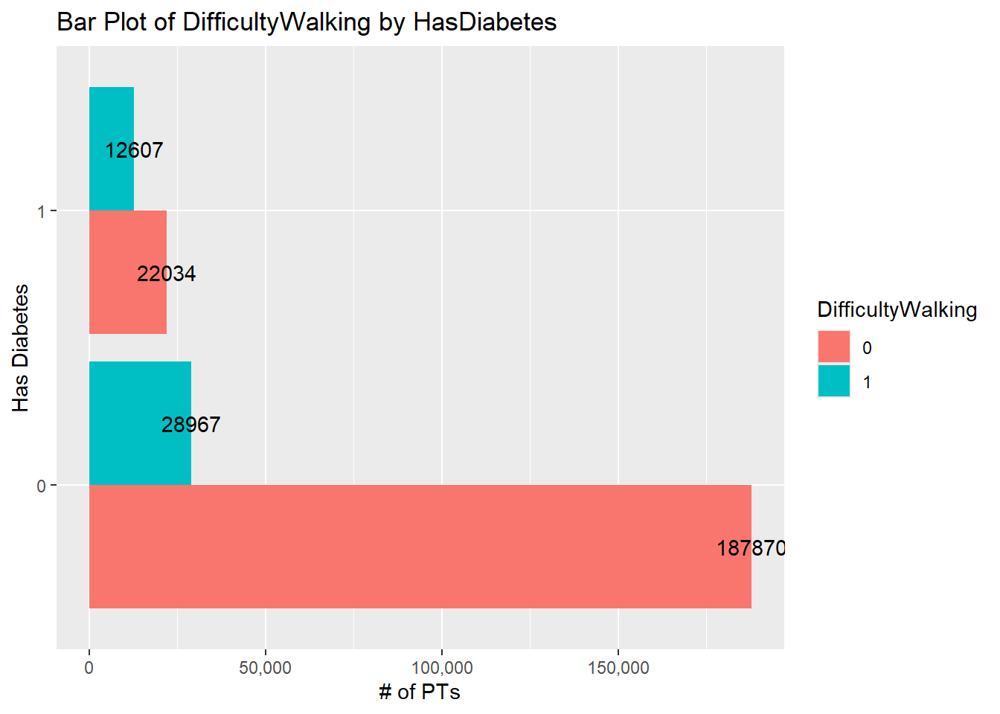
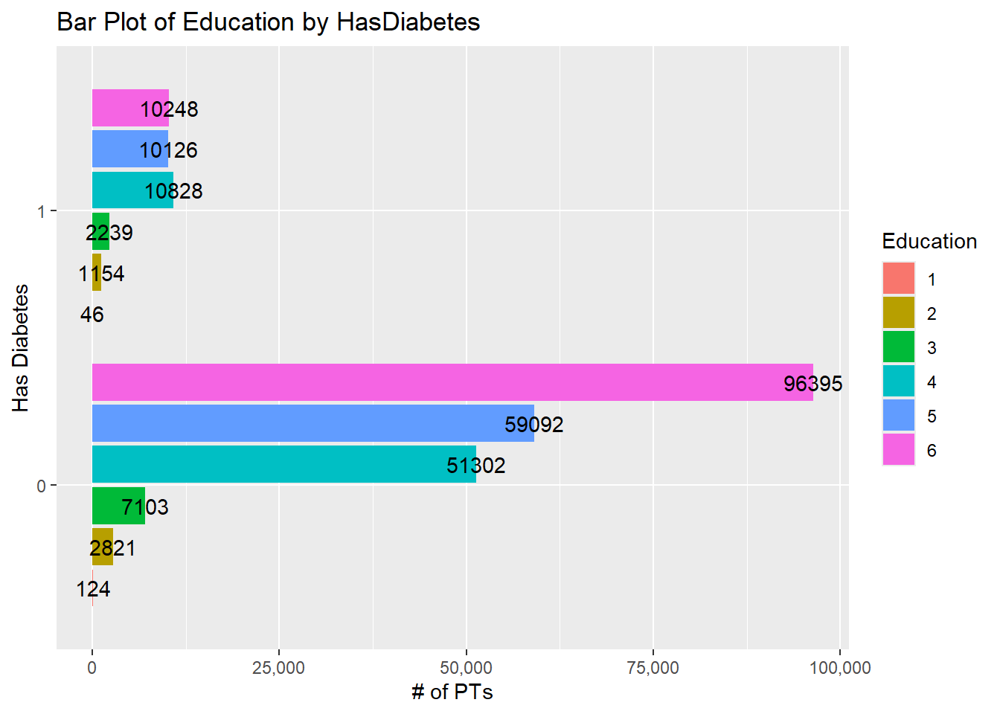
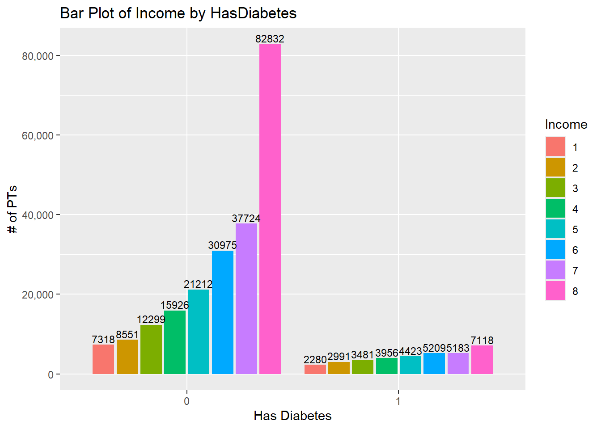

library(tidyverse)
library(dplyr)
library(ggplot2)
library(scales)
library(GGally)
library(ggcorrplot)Final Project
Diabetes Health Indicators - EDA
Introduction
Diabetes Binary Health Indicators
The diabetes binary health indicators file is a subset of 22 variables and 253,690 responses to questions asked of as part of the Behavioral Risk Factor Surveillance System (BHFSS) survey conducted in 2015.
The variables on the binary health indicators file are:
HasDiabetes is the target variable that we want to predict. It is a categorical variable with levels “0” for “No diabetes”, “1” for “Pre-diabetes”, and “2”” for “Diabetes”“. This variable has been renamed from the initial name of Diabetes_binary.
HighBP is a categorical variable with levels “0” for “No high BP” and “1” for “High BP”.
HighCholesterol is a categorical variable with levels “0” for “No High Cholesterol” and “1” for “High Cholesterol”. This variable has been renamed from the initial name of HighChol.
CholesterolChecked is a categorical variable with levels “0” for “No cholesterol check in 5 years” and “1” for “Cholesterol check in 5 years”. This variable has been renamed from the initial name of CholCheck.
BMI is a discrete numeric variable indicating the BMI level of the PT observed.
Smoker is a factor variable with levels “0” for “No” and “Yes” as responses to the question “Have you smoked at least 100 cigarettes in your life?”.
Stroke is a categorical variable with levels “0” for “No” and “1” for “Yes” as reponses to the question “Have you ever had or been told you had a stroke?”.
HeartDiseaseorAttack is a categorical variable with levels “0” for “No” and “1” for “Yes” to the question “Does the PT have coronary heart disease (CHD) or myocardial infraction (MI)?”.
PhysActivity is a categorical variable with levels “0” for “No” and “1” for “Yes” to the question “Not including your job, have you participated in physical activity in the past 30 days?”.
ConsumesFruits is a categorical variable with levels “0” for “No” and “1” for “Yes” to the question “Do you consume fruit 1 or more times per day?”. This variable has been renamed from the initial name of Fruits.
ConsumesVeggies is a categorical variable with levels “0” for “No” and “1” for “Yes” to the question “Do you consume vegetables 1 or more times per day?”. This variable has been renamed from the initial name of Veggies.
HeavyAlcoholUse is a categorical variable with levels “0” for “No” and “1” for “Yes” to the question “How many drinks do you consume each week?”. Men responding to the question were placed in the “Yes” category if they consumed 14 or more alcoholic drinks in a week, otherwise they were placed in the “No” category. Women responding to the question were placed in the “Yes” category if they consumed 7 or more alcoholic drinks in a week, otherwise they were placed in the “No” category. This variable has been renamed from the initial name of HvyAlcoholConsump.
HasHealthcare is a categorical variable with levels “0” for “No” and “1” for “Yes” to the question “Do you have any kind of health care coverage?”. Responses stating the individual had health insurance or prepaid plans were grouped into the “Yes” category. This variable has been renamed from the initial name of AnyHealthcare.
ExpensiveTreatment is a categorical variable with levels “0” for “No” and “1” for “Yes” to the question “Was there a time in the past 12 months when you needed to see a doctor but could not because of cost?”. This variable has been renamed from the initial name of NoDocbcCost.
GeneralHealth is a categorical variable with response levels “1” for “Excellent”, “2” for “Very Good”, “3 for”Good”, “4” for “Fair”, and “5” for “Poor” to the question “Would you say your general health is…?”. This variable has been renamed from the initial name of GenHlth.
BadMentalHealth is a categorical variable with levels “0” through “30” as responses to the question “Over the last 30 days, how many did you experience poor mental health”. Given the thirty different possible responses, it may be suitable to treat BadMentalHealth as a numeric variable. This variable has been renamed from the initial name of MentHlth.
BadPhysicalHealth is a categorical variable with levels “0” through “30” as responses to the question “Over the last 30 days, how many did you experience having physical illness or an injury?”. Given the thirty different possible responses, it may be suitable to treat BadPhysicalHealth as a numeric variable. This variable has been renamed from the initial name of PhysHlth.
DifficultyWalking is a categorical variable with levels “0” for “No” and “1” for “Yes” to the question “Do you have serious difficulty walking or climbing stairs?”.
Sex is a categorical variable with levels “0” for “Female” and “1” for “Male” to the question “What is your Sex?”.
Age is a categorical variable with levels ranging from “1” for “18-24” to “13” for “80 or Older” to the question “What is your age?”. The response were binned together in 5year groups with the exception of groups 1 and 13. Group 1 was expanded to account for PTs that were 18yo or 19yo. Group 13 was created to account for anyone who was 80yo or older.
Education is a categorical variable with levels “1” through “8” as responses to the question “What is the highest grade or year of school you completed?”. The response levels are “1” for “Never attended school or only Kindergarten”, “2” for “Grades 1 through 8 (Elementary)”, “3” for “Grades 9 through 11 (Some high school)”, “4” for “Grade 12 or GED (High school graduate)”, “5” for “College 1 year to 3 years (Some college or technical school)”, and “6” for “College 4 years or more (College graduate)”.
Income is a categorical variable with levels “1” through “8” as reponses to the question “Is your annual income from all sources:?”. The response levels are “1” for “Less than $10,000”, “2” for “Less than $15,000”, “3” for “Less than $20,000”, “4” for “Less than $25,000”, “5” for “Less than $35,000”, “6” for “Less than $50,000”, “7” for “Less than $75,000”, and “8” for “$75,000 or more”.
Purpose and goal
The purpose of the Exploratory Data Analysis (EDA) is to summarize the information from the twenty-one predictor variables with respect to Diabetes_binary and determine if any relationships exist.
The goal of the EDA is to identify the variables having relationships with Diabetes_binary that are also suitable for prediction modeling. We will use these variables to generate different prediction model types and determine one that has the highest rate of success at predicting if someone has diabetes or not.
Data
Before we read-in the data set, we need to establish a library required to use the functions required for summary analysis in R.
Next, we will read-in the data using a relative path to the folder where the data file is stored.
# Use a relative path to import the data.
diabetes_df <- read.csv("./FinalProjectRawData/diabetes_binary_health_indicators_BRFSS2015.csv")
diabetes_df <- as_tibble(diabetes_df)
diabetes_df# A tibble: 253,680 × 22
Diabetes_binary HighBP HighChol CholCheck BMI Smoker Stroke
<dbl> <dbl> <dbl> <dbl> <dbl> <dbl> <dbl>
1 0 1 1 1 40 1 0
2 0 0 0 0 25 1 0
3 0 1 1 1 28 0 0
4 0 1 0 1 27 0 0
5 0 1 1 1 24 0 0
6 0 1 1 1 25 1 0
7 0 1 0 1 30 1 0
8 0 1 1 1 25 1 0
9 1 1 1 1 30 1 0
10 0 0 0 1 24 0 0
# ℹ 253,670 more rows
# ℹ 15 more variables: HeartDiseaseorAttack <dbl>, PhysActivity <dbl>,
# Fruits <dbl>, Veggies <dbl>, HvyAlcoholConsump <dbl>, AnyHealthcare <dbl>,
# NoDocbcCost <dbl>, GenHlth <dbl>, MentHlth <dbl>, PhysHlth <dbl>,
# DiffWalk <dbl>, Sex <dbl>, Age <dbl>, Education <dbl>, Income <dbl>We will then check for missingness,
list("Number of missing values in data set" = sum(is.na(diabetes_df)))$`Number of missing values in data set`
[1] 0We see that there are no missing values throughout the data set so we can proceed with converting the categorical variables to factors and provide meaningful names to variables if needed.
# Convert variables to factors, replace with meaningful names
diabetes_df <- diabetes_df |>
rename("HasDiabetes" = Diabetes_binary,
"HighCholesterol" = HighChol,
"CholesterolChecked" = CholCheck,
"ConsumesFruits" = Fruits,
"ConsumesVeggies" = Veggies,
"HeavyAlcoholUse" = HvyAlcoholConsump,
"HasHealthcare" = AnyHealthcare,
"ExpensiveTreatment" = NoDocbcCost,
"GeneralHealth" = GenHlth,
"BadMentalHealth" = MentHlth,
"BadPhysicalHealth" = PhysHlth,
"DifficultyWalking" = DiffWalk) |>
mutate(across(c(1:4, 6:15, 18:22), as.factor))
str(diabetes_df)tibble [253,680 × 22] (S3: tbl_df/tbl/data.frame)
$ HasDiabetes : Factor w/ 2 levels "0","1": 1 1 1 1 1 1 1 1 2 1 ...
$ HighBP : Factor w/ 2 levels "0","1": 2 1 2 2 2 2 2 2 2 1 ...
$ HighCholesterol : Factor w/ 2 levels "0","1": 2 1 2 1 2 2 1 2 2 1 ...
$ CholesterolChecked : Factor w/ 2 levels "0","1": 2 1 2 2 2 2 2 2 2 2 ...
$ BMI : num [1:253680] 40 25 28 27 24 25 30 25 30 24 ...
$ Smoker : Factor w/ 2 levels "0","1": 2 2 1 1 1 2 2 2 2 1 ...
$ Stroke : Factor w/ 2 levels "0","1": 1 1 1 1 1 1 1 1 1 1 ...
$ HeartDiseaseorAttack: Factor w/ 2 levels "0","1": 1 1 1 1 1 1 1 1 2 1 ...
$ PhysActivity : Factor w/ 2 levels "0","1": 1 2 1 2 2 2 1 2 1 1 ...
$ ConsumesFruits : Factor w/ 2 levels "0","1": 1 1 2 2 2 2 1 1 2 1 ...
$ ConsumesVeggies : Factor w/ 2 levels "0","1": 2 1 1 2 2 2 1 2 2 2 ...
$ HeavyAlcoholUse : Factor w/ 2 levels "0","1": 1 1 1 1 1 1 1 1 1 1 ...
$ HasHealthcare : Factor w/ 2 levels "0","1": 2 1 2 2 2 2 2 2 2 2 ...
$ ExpensiveTreatment : Factor w/ 2 levels "0","1": 1 2 2 1 1 1 1 1 1 1 ...
$ GeneralHealth : Factor w/ 5 levels "1","2","3","4",..: 5 3 5 2 2 2 3 3 5 2 ...
$ BadMentalHealth : num [1:253680] 18 0 30 0 3 0 0 0 30 0 ...
$ BadPhysicalHealth : num [1:253680] 15 0 30 0 0 2 14 0 30 0 ...
$ DifficultyWalking : Factor w/ 2 levels "0","1": 2 1 2 1 1 1 1 2 2 1 ...
$ Sex : Factor w/ 2 levels "0","1": 1 1 1 1 1 2 1 1 1 2 ...
$ Age : Factor w/ 13 levels "1","2","3","4",..: 9 7 9 11 11 10 9 11 9 8 ...
$ Education : Factor w/ 6 levels "1","2","3","4",..: 4 6 4 3 5 6 6 4 5 4 ...
$ Income : Factor w/ 8 levels "1","2","3","4",..: 3 1 8 6 4 8 7 4 1 3 ...Review of our data frame structure shows that we have successfully renamed our variables and converted the categorical variables to factors. It is important to note that while BadMentalHealth and BadPhysicalHealth are categorical responses in the survey, the responses are discrete over a range of possible entries (1 to 30) makes them candidates for numeric analysis.
Next we will generate a summary of the variables to provide insight on what we can expect to see during our EDA.
print(list("Summary of Diabetes Data Frame Variables"=summary(diabetes_df)))$`Summary of Diabetes Data Frame Variables`
HasDiabetes HighBP HighCholesterol CholesterolChecked BMI
0:218334 0:144851 0:146089 0: 9470 Min. :12.00
1: 35346 1:108829 1:107591 1:244210 1st Qu.:24.00
Median :27.00
Mean :28.38
3rd Qu.:31.00
Max. :98.00
Smoker Stroke HeartDiseaseorAttack PhysActivity ConsumesFruits
0:141257 0:243388 0:229787 0: 61760 0: 92782
1:112423 1: 10292 1: 23893 1:191920 1:160898
ConsumesVeggies HeavyAlcoholUse HasHealthcare ExpensiveTreatment GeneralHealth
0: 47839 0:239424 0: 12417 0:232326 1:45299
1:205841 1: 14256 1:241263 1: 21354 2:89084
3:75646
4:31570
5:12081
BadMentalHealth BadPhysicalHealth DifficultyWalking Sex
Min. : 0.000 Min. : 0.000 0:211005 0:141974
1st Qu.: 0.000 1st Qu.: 0.000 1: 42675 1:111706
Median : 0.000 Median : 0.000
Mean : 3.185 Mean : 4.242
3rd Qu.: 2.000 3rd Qu.: 3.000
Max. :30.000 Max. :30.000
Age Education Income
9 :33244 1: 174 8 :90385
10 :32194 2: 4043 7 :43219
8 :30832 3: 9478 6 :36470
7 :26314 4: 62750 5 :25883
11 :23533 5: 69910 4 :20135
6 :19819 6:107325 3 :15994
(Other):87744 (Other):21594 Reeview of the data set summary shows that BMI appears to be centered with outliers that need investigated for removal. With median values of “0” over a range of 1-30, both BadMentalHealth and BadPhysicalHealth have a high tendency response of “0” in the survey. HighBP, HighCholesterol, Smoker, GeneralHealth, Sex and Age each appear to have response ratios near 1:1. The remaining binary variables of CholesterolChecked, Stroke, HeartDiseaseorAttack, PhysActivity, ConsumesFruits, ConsumesVeggies, HeavyAlcoholUse, HasHealthcare, ExpensiveTreatment, and DifficultyWalking each heavily favor one response over the other. The variables of Education and Income both show an increase in responses as the category range values increase.
Summarizations
The first variable we will investigate is BMI. Review of the variable summary information shows
print(list("Summary of BMI"=summary(diabetes_df$BMI)))$`Summary of BMI`
Min. 1st Qu. Median Mean 3rd Qu. Max.
12.00 24.00 27.00 28.38 31.00 98.00 that the data has a Q1 value of 24, Q3 value of 31, Median of 27, and Mean of 28.38. This tells us the data is tightly grouped together with BMI values of less than 13.5 and greater than 41.5 as outliers. These outliers include our Min of 12 and Max of 98. A histogram of BMI shows
BMI_histogram <- ggplot(diabetes_df, aes(BMI)) +
geom_histogram(aes(y=..density..), binwidth=1, fill="#CC0000", color="lightgray") +
labs(title="Histogram of BMI", y="Density (# of PTs)") +
scale_x_continuous(breaks = seq(0, 100, by = 10)) +
stat_function(fun=dnorm, args=list(mean=mean(diabetes_df$BMI), sd=sd(diabetes_df$BMI)))
BMI_histogramWarning: The dot-dot notation (`..density..`) was deprecated in ggplot2 3.4.0.
ℹ Please use `after_stat(density)` instead.
that the data follows a generally normal distribution with some skewness to the right. The histogram also visually confirms there are outleirs in the BMI ranges of 12-13 and 50-98.
lowrange <- sum(diabetes_df$BMI < 13.5)
highrange <- sum(diabetes_df$BMI > 41.5)
BMIoutliers <-sum(lowrange, highrange)
print(list("Number of BMI Oultiers"=BMIoutliers))$`Number of BMI Oultiers`
[1] 9847print(list("BMI Outlier portion of data set"=BMIoutliers/nrow(diabetes_df)))$`BMI Outlier portion of data set`
[1] 0.03881662We identified there are total of 9847 observation that are outliers when using 1.5 the IQR as our defining statistic. This accounts for over 3.88% of the data set, which is a higher than we’re willing to remove. Because the histogram shows there is close to a 0% probability of entries starting near a BMI of 50,
lowrange <- sum(diabetes_df$BMI < 13.5)
highrange <- sum(diabetes_df$BMI > 50)
BMIoutliers <-sum(lowrange, highrange)
print(list("Number of BMI Oultiers"=BMIoutliers))$`Number of BMI Oultiers`
[1] 2202print(list("BMI Outlier portion of data set"=BMIoutliers/nrow(diabetes_df)))$`BMI Outlier portion of data set`
[1] 0.008680227we udpated the parametrs and found there to be 2202 outlier observations which account for less than 1% of the data set. It would be reasonable to remove these observations from the data set before prediction model training.
Removing the outliers then splitting the BMI histogram with respect to HasDiabetes shows
diabetes_df <- diabetes_df |>
filter(BMI >= 13.5) |>
filter(BMI <= 50 )
BMI_by_histplot <- ggplot(diabetes_df, aes(BMI)) +
geom_histogram(aes(y=..density..), binwidth=1, fill="#CC0000", color="lightgray") +
labs(title="Histogram of BMI by HasDiabetes", y="Density (# of PTs)") +
scale_x_continuous(breaks = seq(0, 100, by = 10)) +
stat_function(fun=dnorm, args=list(mean=mean(diabetes_df$BMI), sd=sd(diabetes_df$BMI))) +
facet_grid(~HasDiabetes)
BMI_by_histplot
that the distribution of observations in the “No” HasDiabetes group has a center near a BMI of 25 while the “Yes” HasDiabetes group has a center near a BMI of 30. This change of BMI density distributions between the HasDiabetes groups indicates that BMI appears to be a suitable variable for prediction modeling.
The next variable we will investigate is HighPB. Review of the variable summary information shows
print(list("Summary of HighBP"=summary(diabetes_df$HighBP)))$`Summary of HighBP`
0 1
143994 107484 there are greater number of observations of PTs not having high blood pressure to those that do in a ratio of approximately 7:5. This is fairly close to being 1:1, so any differences between the HasDiabetes categories would be due to interactions between the variables.
Using a bar plot to observe HighBP with respect to HasDiabetes shows
HighBP_by <- diabetes_df |>
group_by(HasDiabetes, HighBP) |>
summarize(count = n())
HighPB_plot <- ggplot(HighBP_by, aes(HasDiabetes, count, fill=HighBP)) +
geom_bar(stat = "identity", position = position_dodge()) +
geom_text(aes(label = count), position = position_dodge(width=0.9), vjust=-0.25) +
scale_y_continuous(labels = comma) +
labs(title = "Bar Plot of HighBP by HasDiabetes", x="Has Diabetes", y="# of PTs")
HighPB_plot
that the majority of PTs with diabetes have high blood pressure while the majority of PTs without diabetes do not have high blood pressure. The observations in the “No” HasDiabetes category have a “No” to “Yes” HighBP ratio of approximately 7:4 (near 2:1). The observations in the “Yes” HasDiabetes category have a “No” to “Yes” HighBP ratio of approximately 4:13 (near 1:3). This flip in ratios between the HasDiabetes groups suggests that there is a relationship between HasDiabetes and HighBP where a PT with high blood pressure will also have diabetes.
The next variable that we will investigate is HighCholesterol. Review of the variable summary information shows
print(list("Summary of HighCholesterol"=summary(diabetes_df$HighCholesterol)))$`Summary of HighCholesterol`
0 1
144867 106611 there is approximately a 14:11 “No” to “Yes” ratio of HighCholesterol observations. This distribution is fairly close to being 1:1, so any differences between the HasDiabetes categories would be due to interactions between the variables.
Using a bar plot to observe HighCholesterol with respect to HasDiabetes we see
HighCholesterol_by <- diabetes_df |>
group_by(HasDiabetes, HighCholesterol) |>
summarize(count = n())
HighCholesterol_plot <- ggplot(HighCholesterol_by, aes(HasDiabetes, count, fill=HighCholesterol)) +
geom_bar(stat = "identity", position = position_dodge()) +
geom_text(aes(label = count), position = position_dodge(width=0.9), hjust=0.5) +
scale_y_continuous(labels = comma) +
labs(title="Bar Plot of HighCholesterol by HasDiabetes", x="Has Diabetes", y= "# of PTs") +
coord_flip()
HighCholesterol_plot
that the ratios change between the HasDiabetes groups. While the ratios favor low cholesterol in the group without diabetes, they favor high cholesterol levels in the group with diabetes. There is approximately a 13:8 (nears 2:1) ratio of “No” to “Yes” HighCholesterol responses in the “No” HasDiabetes group. There is approximately a 11:23 (nears 1:2) ratio of “No” to “Yes” HighCholesterol responses in the “Yes” HasDiabetes group. The shift in ratios between the groups trending towards PTs with diabetes having high cholesterol suggests that there is a relationship between HasDiabetes and HighCholesterol where someone with high cholesterol will also have diabetes.
The next variable we will investigate is CholesterolChecked. Review of the variable summary information shows
print(list("Summary of CholesterolChecked"=summary(diabetes_df$CholesterolChecked)))$`Summary of CholesterolChecked`
0 1
9404 242074 that the overwhelming majority of PTs had their cholesterol checked at a ratio of 9:242 (nears 1:27) when compared to those who did not. Any differences between the HasDiabetes groups may be heavily influenced by the number of observations in each group more than the interaction between the variables. Review of a bar plot of CholesterolChecked with respect to HasDiabetes shows
CholesterolChecked_by <- diabetes_df |>
group_by(HasDiabetes, CholesterolChecked) |>
summarize(count = n())`summarise()` has grouped output by 'HasDiabetes'. You can override using the
`.groups` argument.CholesterolChecked_plot <- ggplot(CholesterolChecked_by, aes(HasDiabetes, count, fill=CholesterolChecked)) +
geom_bar(stat = "identity", position = position_dodge()) +
geom_text(aes(label = count), position = position_dodge(width=0.9), vjust=-0.25) +
scale_y_continuous(labels = comma) +
labs(title="Bar Plot of CholesterolChecked by HasDiabetes", x="Has Diabetes", y= "# of PTs")
CholesterolChecked_plot
that the group of “Yes” CholesterolChecked responses dominates both categories of HasDiabetes. The “No” HasDiabetes group has a “No” to “Yes” CholesterolChecked ratio of approximately 9:208 (nears 1:23). The “Yes” HasDiabetes group has a “No” to “Yes” CholesterolChecked ratio of approximately 1:172. This information suggests that there is a relationship between the variables where someone with diabetes has a high probability of having their cholesteroal checked every five years, which is not what we’re trying to predict. CholesterolChecked does not appear to be a good variable for use in prediction modeling.
The next variable we’re going to analyze is Smoker. Review of the variable summary shows that
print(list("Summary of Smoker"=summary(diabetes_df$Smoker)))$`Summary of Smoker`
0 1
139967 111511 the ratio of smokers to non-smokers in the study is approximately 14:11. This is distribution between the groups is fairly close to a 1:1 distribution. Any differences between the HasDiabetes groups will be due to interactions between the two variables. Reviewing the bar plot of Smoker with respect to HasDiabetes shows
Smoker_by <- diabetes_df |>
group_by(HasDiabetes, Smoker) |>
summarize(count = n())`summarise()` has grouped output by 'HasDiabetes'. You can override using the
`.groups` argument.Smoker_plot <- ggplot(Smoker_by, aes(HasDiabetes, count, fill=Smoker)) +
geom_bar(stat = "identity", position = position_dodge()) +
geom_text(aes(label = count), position = position_dodge(width=0.9), hjust=0.5) +
scale_y_continuous(labels = comma) +
labs(title="Bar Plot of Smoker by HasDiabetes", x="Has Diabetes", y= "# of PTs") +
coord_flip()
Smoker_plot
shows that the “No” HasDiabetes group has a “No” to “Yes” Smoker distribution of approximately 62:47 which is closer to a 1:1 distribution than a 2:1 distribution. The “Yes” HasDiabetes group has a “No” to “Yes” Smoker distribution of approximately 17:18 which also nears a 1:1 distribution. While the ratios shifts indicate that smokers have a higher likelihood of having diabetes than non smokers, neither Smoker group separates itself from the variable in both HasDiabetes categories. Smoker is not a suitable variable for inclusion in our prediction model.
The next variable we are going to analyze is Stroke. Review of the variable summary shows
print(list("Summary of Stroke"=summary(diabetes_df$Stroke)))$`Summary of Stroke`
0 1
241295 10183 that Stroke has a 24:1 “No” to “Yes” ratio. This suggests that any differences between the HasDiabetes groups may be heavily influenced by the number of observations in each group more than the interaction between the variables. Review of a bar plot for Stroke with respect to HasDiabetes shows
Stroke_by <- diabetes_df |>
group_by(HasDiabetes, Stroke) |>
summarize(count = n())`summarise()` has grouped output by 'HasDiabetes'. You can override using the
`.groups` argument.Stroke_plot <- ggplot(Stroke_by, aes(HasDiabetes, count, fill=Stroke)) +
geom_bar(stat = "identity", position = position_dodge()) +
geom_text(aes(label = count), position = position_dodge(width=0.9), vjust=-0.25) +
scale_y_continuous(labels = comma) +
labs(title="Bar Plot of Stroke by HasDiabetes", x="Has Diabetes", y= "# of PTs")
Stroke_plotthat the Stroke “No” group is prominent in both groups of HasDiabetes. The “No” HasDiabetes group has a “No to”Yes” Stroke ratio of approximately 211:7 which is close to 30:1. The “Yes” HasDiabetes group has a “No to”Yes” Stroke ratio of approximately 32:3 which is close to 11:1. While still favoring the “No” Stroke group, the reduction in ratios indicates that there is a relationship between Stroke and HasDiabetes. However, the relationship appears to be where someone who had a stroke is likely to also have diabetes, but not someone who has diabetes is likely to have had a stroke. Stroke does not appear to be suitable for inclusion in the prediction model.
The next variable we are going to analyze is HeartDisesaseorAttack. Summary information shows
print(list("Summary of HeartDiseaseorAttack"=summary(diabetes_df$HeartDiseaseorAttack)))$`Summary of HeartDiseaseorAttack`
0 1
227838 23640 that the ratio between the “No” and “Yes” HeartDiseaseorAttack groups is approximately 23:2 which is slightly larger than 11:1. Review of a bar plot for HeartDiseaseorAttack with respect to HasDiabetes shows
HeartDiseaseorAttack_by <- diabetes_df |>
group_by(HasDiabetes, HeartDiseaseorAttack) |>
summarize(count = n())`summarise()` has grouped output by 'HasDiabetes'. You can override using the
`.groups` argument.HeartDiseaseorAttack_plot <- ggplot(HeartDiseaseorAttack_by, aes(HasDiabetes, count, fill=HeartDiseaseorAttack)) +
geom_bar(stat = "identity", position = position_dodge()) +
geom_text(aes(label = count), position = position_dodge(width=0.9), hjust=0.5) +
scale_y_continuous(labels = comma) +
labs(title="Bar Plot of HeartDiseaseorAttack by HasDiabetes", x="Has Diabetes", y= "# of PTs") +
coord_flip()
HeartDiseaseorAttack_plot
shows that the “No” HeartDiseaseorAttack group is noticably larger than the “Yes” group for each category of HasDiabetes. The “No” HeartDisease group has a “No” to “Yes” HeartDiseaseorAttack ratio of approximately 10:1. The “Yes” HeartDisease group has a “No” to “Yes” HeartDiseaseorAttack ratio of 27:7 which nears 4:1. The ratio change between the HasDiabetes groups suggests that there is a relationship between the variables. However, this relationship appears to be one where someone having diabetes can be used to predict if they have heart disease or have experienced a heart attack, which is not what we’re trying to predict. HeartDiseaseorAttack does not appear to be suitable for inclusion in the prediction model.
The next variable we will summarize is PhysActivity. Review of the variable summary information shows
print(list("Summary of PhysicalActivity"= summary(diabetes_df$PhysActivity)))$`Summary of PhysicalActivity`
0 1
60722 190756 the ratio of “No” to “Yes” responses is approximately 6:19 which is slightly less than 1:3. This suggests that differences between the HasDiabetes groups may be influenced by the number of “Yes” PhysActivity observations. Review of a bar plot of PhysActivity with respect to HasDiabetes shows
PhysActivity_by <- diabetes_df |>
group_by(HasDiabetes, PhysActivity) |>
summarize(count = n())`summarise()` has grouped output by 'HasDiabetes'. You can override using the
`.groups` argument.PhysActivity_plot <- ggplot(PhysActivity_by, aes(HasDiabetes, count, fill=PhysActivity)) +
geom_bar(stat = "identity", position = position_dodge()) +
geom_text(aes(label = count), position = position_dodge(width=0.9), vjust=-0.25) +
scale_y_continuous(labels = comma) +
labs(title="Bar Plot of PhysActivity by HasDiabetes", x="Has Diabetes", y= "# of PTs")
PhysActivity_plot
PhysActivity is greater in both HasDiabetes groups. The “No” HeartDisease group has a “No” to “Yes” PhysActivity ratio of approximately 5:17 which is slightly less than 1:3. The “Yes” HeartDisease group has a “No” to “Yes” PhysActivity ratio of approximately 13:22 which is slightly greater than 1:2. This change in ratios shows that there is a relationship between the variables. The relationship appears to be one where someone having diabetes can be used to predict if they participate in physical activity or not, which is not what we’re trying to predict. PhysActivity does not appear to be suitable for inclusion in the prediction model.
The next variable we’re going to summarize is ConsumesFruits. Review of the variable summary information shows
print(list("Summary of ConsumesFruits"=summary(diabetes_df$ConsumesFruits)))$`Summary of ConsumesFruits`
0 1
91734 159744 that ConsumesFruits has a “No” to “Yes” ratio of approximately 9:16, which is slightly greater than a 1:2 distribution. Review of a bar graph of ConsumesFruits with respect to HasDiabetes shows
ConsumesFruits_by <- diabetes_df |>
group_by(HasDiabetes, ConsumesFruits) |>
summarize(count = n())`summarise()` has grouped output by 'HasDiabetes'. You can override using the
`.groups` argument.ConsumesFruits_plot <- ggplot(ConsumesFruits_by, aes(HasDiabetes, count, fill=ConsumesFruits)) +
geom_bar(stat = "identity", position = position_dodge()) +
geom_text(aes(label = count), position = position_dodge(width=0.9), hjust=0.5) +
scale_y_continuous(labels = comma) +
labs(title="Bar Plot of ConsumesFruits by HasDiabetes", x="Has Diabetes", y= "# of PTs") +
coord_flip()
ConsumesFruits_plot
that both groups of HasDiabetes have a greater number of “Yes” ConsumesFruits observations. The “No” HasDiabetes group has a “No” to “Yes” ConsumesFruits ratio of approximately 8:14 which is slightly greater than 1:2. The “Yes” HasDiabetes group has a “No” to “Yes” ConsumesFruits ratio of approximately 15:21 which is slightly greater than 2:3. This change in ratios shows that there is a relationship between the variables. However, the relationship appears to be one where someone having diabetes can be used to predict if they eat fruits or not, which is not what we’re tyring to predict. ConsumesFruits does not appear to be suitable for inclusion in the prediction model.
The next variabel we’re going to summarize is **ConsumesVeggies*. Review of the variable summary information shows
print(list("Summary of ConsumesVeggies"=summary(diabetes_df$ConsumesVeggies)))$`Summary of ConsumesVeggies`
0 1
47284 204194 that the proporiton of “No” to “Yes” responses is approximately 5:21 which is slightly less than 1:4. Review of a bar plot of ConsumesVeggies with respect to HasDiabetes shows
ConsumesVeggies_by <- diabetes_df |>
group_by(HasDiabetes, ConsumesVeggies) |>
summarize(count = n())`summarise()` has grouped output by 'HasDiabetes'. You can override using the
`.groups` argument.ConsumesVeggies_plot <- ggplot(ConsumesVeggies_by, aes(HasDiabetes, count, fill=ConsumesVeggies)) +
geom_bar(stat = "identity", position = position_dodge()) +
geom_text(aes(label = count), position = position_dodge(width=0.9), vjust=-0.25) +
scale_y_continuous(labels = comma) +
labs(title="Bar Plot of ConsumesVeggies by HasDiabetes", x="Has Diabetes", y= "# of PTs")
ConsumesVeggies_plot
that the “Yes” ConsumesVeggies observations are substantially greater in both categories of HasDiabetes. The “No” HasDiabetes group has a “No” to “Yes” ConsumesVeggies ratio of approximately 2:9 which is slightly less than 1:4. The “Yes” HasDiabetes group has a “No” to “Yes” ConsumesVeggies ratio of approximately 1:3. The change in ratios between the HasDiabetes groups shows that there is a relationship between the variables. However, the relationship appears to be one where someone having diabetes can be used to predict if they eat vegetables or not, which is not what we’re trying to predict. ConsumesVeggies does not appear to be suitable for inclusion in the prediction model.
The next variable we’re going to summarize is HeavyAlcoholUse. Review of the variable summary information shows
print(list("Summary of HeavyAlcoholUse"=summary(diabetes_df$HeavyAlcoholUse)))$`Summary of HeavyAlcoholUse`
0 1
237283 14195 shows that the ratio of “No” to “Yes” responses is approximately 24:1. This suggests that any differences between the HasDiabetes groups may be influenced by the number of observations. Reviewing the bar plot of HeavyAlcoholUse with respect to **HeartDisease* shows
HeavyAlcoholUse_by <- diabetes_df |>
group_by(HasDiabetes, HeavyAlcoholUse) |>
summarize(count = n())`summarise()` has grouped output by 'HasDiabetes'. You can override using the
`.groups` argument.HeavyAlcoholUse_plot <- ggplot(HeavyAlcoholUse_by, aes(HasDiabetes, count, fill=HeavyAlcoholUse)) +
geom_bar(stat = "identity", position = position_dodge()) +
geom_text(aes(label = count), position = position_dodge(width=0.9), hjust=0.5) +
scale_y_continuous(labels = comma) +
labs(title="Bar Plot of HeavyAlcoholUse by HasDiabetes", x="Has Diabetes", y= "# of PTs") +
coord_flip()
HeavyAlcoholUse_plot
that the “No” HeavyAlcoholUse responses constitute the majority of observations in both HasDiabetes groups. The “No” HasDiabetes group has a “No” to “Yes” HeavyAlcoholUse ratio of approximately 205:13 which reduces close to 16:1. The “Yes” HasDiabetes group has a “No” to “Yes” HeavyAlcoholUse ratio of approximately 345:8 which reduces close to 43:1. The change in ratios shows that there is a relationship between the variables. However, the relationship appears to be one where someone having diabetes can be used to predict if they consume alcohol heavily, which is not what we’re trying to predict. HeavyAlcoholUse does not appear to be suitable for inclusion in the prediction model.
The next variable we’re going to summarize is HasHealthcare. Review of the variable summary information
print(list("Summary of HasHealthcare"=summary(diabetes_df$HasHealthcare)))$`Summary of HasHealthcare`
0 1
12246 239232 shows that the ratio of “No” to “Yes” observations is approximately 12:241 which is close to a 1:20 ratio. This is suggestive that any differences between the HasDiabetes categories may be heavily influenced by the number of responses in each. Reviewing the bar chart of HasHealthcare with respect to HasDiabetes shows
HasHealthcare_by <- diabetes_df |>
group_by(HasDiabetes, HasHealthcare) |>
summarize(count = n())`summarise()` has grouped output by 'HasDiabetes'. You can override using the
`.groups` argument.HasHealthcare_plot <- ggplot(HasHealthcare_by, aes(HasDiabetes, count, fill=HasHealthcare)) +
geom_bar(stat = "identity", position = position_dodge()) +
geom_text(aes(label = count), position = position_dodge(width=0.9), vjust=-0.25) +
scale_y_continuous(labels = comma) +
labs(title="Bar Plot of HasHealthcare by HasDiabetes", x="Has Diabetes", y= "# of PTs")
HasHealthcare_plotthe “Yes” HasHealthcare observations are substantially higher than the “No” responses for both categories of **HasDiabetes*. The “No” HasDiabetes group has a “No” to “Yes” HasHealthcare ratio of approximately 11:207 which reduces close to 1:19. The “Yes” HasDiabetes group has a “No” to “Yes” HasHealthcare ratio of approximately 14:339 which reduces close to 1:24. The ratios in both groups of HasDiabetes do not differ much from the overall HasHealthcare variable ratio of 1:20. HasHealthcare does not appear to be suitable for inclusion in the prediction model.
The next variable we’re going to summarize is ExpensiveTreatment. Review of the variable summary information
print(list("Summary of ExpensiveTreatment"=summary(diabetes_df$ExpensiveTreatment)))$`Summary of ExpensiveTreatment`
0 1
230457 21021 that the ration of “No” to “Yes” observations is approximately 232:21 which reduces near 11:1. This is suggestive that any differences between the HasDiabetes categories may be heavily influenced by the number of repsonses in each. Reviwing the bar chart of ExpensiveTreatment with respect to HasDiabetes shows
ExpensiveTreatment_by <- diabetes_df |>
group_by(HasDiabetes, ExpensiveTreatment) |>
summarize(count = n())`summarise()` has grouped output by 'HasDiabetes'. You can override using the
`.groups` argument.ExpensiveTreatment_plot <- ggplot(ExpensiveTreatment_by, aes(HasDiabetes, count, fill=ExpensiveTreatment)) +
geom_bar(stat = "identity", position = position_dodge()) +
geom_text(aes(label = count), position = position_dodge(width=0.9), hjust=0.5) +
scale_y_continuous(labels = comma) +
labs(title="Bar Plot of ExpensiveTreatment by HasDiabetes", x="Has Diabetes", y= "# of PTs") +
coord_flip()
ExpensiveTreatment_plot
the “No” observations are substantially greater than the “Yes” responses for both categories of HasDiabetes. The “No” HasDiabetes group has a “No” to “Yes” ExpensiveTreatment ratio of approximately 201:17 which reduces close to 12:1. The “Yes” HasDiabetes group has a “No” to “Yes” ExpensiveTreatment ratio of approximately 316:37 which reduces close to 9:1. There appears to be a relationship between the variables where someone with diabetes has a greater likelihood of not seeking treatment due to the cost, but that is not what we’re trying to predict. ExpensiveTreatment does not appear to be suitbale for inclusion in the prediciton model.
The next variable we’re going to summarize is GeneralHealth. Review of the variable summary information
print(list("Summary of GeneralHealth"=summary(diabetes_df$GeneralHealth)))$`Summary of GeneralHealth`
1 2 3 4 5
45159 88704 74967 30900 11748 shows that the majority of patients reported being in “Excellent” to “Good” health. Reviewing the bar chart of GeneralHealth with respect to HasDiabetes shows
GeneralHealth_by <- diabetes_df |>
group_by(HasDiabetes, GeneralHealth) |>
summarize(count = n())`summarise()` has grouped output by 'HasDiabetes'. You can override using the
`.groups` argument.GeneralHealth_plot <- ggplot(GeneralHealth_by, aes(HasDiabetes, count, fill=GeneralHealth)) +
geom_bar(stat = "identity", position = position_dodge()) +
geom_text(aes(label = count), position = position_dodge(width=0.9), vjust=-0.25) +
scale_y_continuous(labels = comma) +
labs(title="Bar Plot of GeneralHealth by HasDiabetes", x="Has Diabetes", y= "# of PTs")
GeneralHealth_plotthat there is a shift in the reporting tendencies between the HasDiabetes categories. The “No” HasDiabetes group has a central tendency of “Very Good” followed by “Good” GeneralHealth responses while the “Yes” HasDiabetes group has a central tendency of “Good” followed by “Fair” GeneralHealth responses
NoDiabetes_high_three <- sum(GeneralHealth_by$count[1:3])/sum(GeneralHealth_by$count[1:5])
NoDiabetes_fourth <- GeneralHealth_by$count[4]/sum(GeneralHealth_by$count[1:5])
YesDiabetes_high_three <- sum(GeneralHealth_by$count[7:9])/sum(GeneralHealth_by$count[6:10])
YesDiabetes_fourth <- GeneralHealth_by$count[10]/sum(GeneralHealth_by$count[6:10])
print(list("GeneralHealth 1 through 3, HasDiabetes in 'No'"=NoDiabetes_high_three, "GeneralHealth 4, HasDiabetes in 'No'"=NoDiabetes_fourth, "GeneralHealth 2 through 4, HasDiabetes in 'Yes'"=YesDiabetes_high_three, "GeneralHealth 5, HasDiabetes in 'Yes'"=NoDiabetes_fourth))$`GeneralHealth 1 through 3, HasDiabetes in 'No'`
[1] 0.8674027
$`GeneralHealth 4, HasDiabetes in 'No'`
[1] 0.09865936
$`GeneralHealth 2 through 4, HasDiabetes in 'Yes'`
[1] 0.8406513
$`GeneralHealth 5, HasDiabetes in 'Yes'`
[1] 0.09865936Review of the GeneralHealth response proportions in the “No” HasDiabetes group shows that over 86.59% of the observations reported having a GeneralHealth status of “Good” or better for the three highest responses with the 4th highest response of “Fair” accounting for another 9.98% of group responses. Review of the GeneralHealth response proportions in the “Yes” HasDiabetes shows that over 83.82% of the observations reported having a GeneralHealth status of “Very Good” to “Fair” for the three highest responses with the fourth highest response of “Poor” accounting for another 9.98% of group responses. The shift in GeneralHealth tendency between the HasDiabetes groups suggests that there is a relationship between the variables. GeneralHealth appears to be a suitable variable for prediciton modeling.
The next variable we’re going to summarize is BadMentalHealth. Review of the variable summary information
print(list("Summary of BadMentalHealth"=summary(diabetes_df$BadMentalHealth)))$`Summary of BadMentalHealth`
Min. 1st Qu. Median Mean 3rd Qu. Max.
0.000 0.000 0.000 3.155 2.000 30.000 shows that there is a tendency for the PTs to report that their mental health was not good for zero days.
Review of a histogram of the variable along with histograms of MentalHealth with respect to HasDiabetes shows
BadMentalHealth_histogram <- ggplot(diabetes_df, aes(BadMentalHealth)) +
geom_histogram(aes(y=..density..), binwidth=1, fill="#CC0000", color="lightgray") +
scale_x_continuous(breaks = seq(0, 30, by = 5)) +
scale_y_continuous(breaks = seq(0, 1, by = 0.05)) +
labs(title="Histogram of BadMentalHealth", x="# of Days Mental Health Not Good", y="Density (# of PTs)")
BadMentalHealth_histogramBadMentalHealth_by_histplot <- ggplot(diabetes_df, aes(BadMentalHealth)) +
geom_histogram(aes(y=..density..), binwidth=1, fill="#CC0000", color="lightgray") +
labs(title="Histogram of BadMentalHealth by HasDiabetes", y="Density (# of PTs)") +
scale_x_continuous(breaks = seq(0, 30, by = 5)) +
scale_y_continuous(breaks = seq(0, 1, by = 0.05)) +
facet_grid(~HasDiabetes)
BadMentalHealth_by_histplotthat the majority of the observations in both categories of HasDiabetes follow the similar trend where the majority of non-zero values in BadMentalHealth are in the range of 1-10 days. After remvoing the zero values for analysis, we compared the proportions of 10-day BadMentalHealth ranges between the HasDiabetes groups.
BadMentalHealth_by_nozero <- diabetes_df |>
group_by(HasDiabetes, BadMentalHealth) |>
filter(BadMentalHealth >= 1) |>
summarize(count=n())`summarise()` has grouped output by 'HasDiabetes'. You can override using the
`.groups` argument.print(BadMentalHealth_by_nozero, n=60)# A tibble: 60 × 3
# Groups: HasDiabetes [2]
HasDiabetes BadMentalHealth count
<fct> <dbl> <int>
1 0 1 7679
2 0 2 11465
3 0 3 6403
4 0 4 3259
5 0 5 7729
6 0 6 819
7 0 7 2672
8 0 8 524
9 0 9 78
10 0 10 5256
11 0 11 38
12 0 12 330
13 0 13 32
14 0 14 957
15 0 15 4422
16 0 16 73
17 0 17 42
18 0 18 76
19 0 19 12
20 0 20 2654
21 0 21 178
22 0 22 50
23 0 23 30
24 0 24 27
25 0 25 896
26 0 26 37
27 0 27 66
28 0 28 268
29 0 29 128
30 0 30 9183
31 1 1 788
32 1 2 1481
33 1 3 900
34 1 4 476
35 1 5 1186
36 1 6 158
37 1 7 391
38 1 8 106
39 1 9 12
40 1 10 1033
41 1 11 3
42 1 12 62
43 1 13 8
44 1 14 190
45 1 15 989
46 1 16 12
47 1 17 11
48 1 18 19
49 1 19 4
50 1 20 639
51 1 21 46
52 1 22 10
53 1 23 8
54 1 24 6
55 1 25 258
56 1 26 6
57 1 27 11
58 1 28 54
59 1 29 27
60 1 30 2664HasDiabetesNo_first_ten <- list("HasDiabetesNo, BadMentalHealth, 1-10 days proprotion of data" =sum(BadMentalHealth_by_nozero$count[1:10])/sum(BadMentalHealth_by_nozero$count[1:30]))
HasDiabetesNo_middle_ten <- list("HasDiabetesNo, BadMentalHealth, 11-20 days proprotion of data" =sum(BadMentalHealth_by_nozero$count[11:20])/sum(BadMentalHealth_by_nozero$count[1:30]))
HasDiabetesNo_last_ten <- list("HasDiabetesNo, BadMentalHealth, 21-30 days proprotion of data" =sum(BadMentalHealth_by_nozero$count[21:30])/sum(BadMentalHealth_by_nozero$count[1:30]))
HasDiabetesYes_first_ten <- list("HasDiabetesYes, BadMentalHealth, 1-10 days proprotion of data"=sum(BadMentalHealth_by_nozero$count[31:40])/sum(BadMentalHealth_by_nozero$count[31:60]))
HasDiabetesYes_middle_ten <- list("HasDiabetesYes, BadMentalHealth, 11-20 days proprotion of data"=sum(BadMentalHealth_by_nozero$count[41:50])/sum(BadMentalHealth_by_nozero$count[31:60]))
HasDiabetesYes_last_ten <- list("HasDiabetesYes, BadMentalHealth, 20-30 days proprotion of data"=sum(BadMentalHealth_by_nozero$count[51:60])/sum(BadMentalHealth_by_nozero$count[31:60]))
print(c(HasDiabetesNo_first_ten, HasDiabetesYes_first_ten, HasDiabetesNo_middle_ten, HasDiabetesYes_middle_ten, HasDiabetesNo_last_ten, HasDiabetesYes_last_ten))$`HasDiabetesNo, BadMentalHealth, 1-10 days proprotion of data`
[1] 0.7017726
$`HasDiabetesYes, BadMentalHealth, 1-10 days proprotion of data`
[1] 0.5650632
$`HasDiabetesNo, BadMentalHealth, 11-20 days proprotion of data`
[1] 0.1320833
$`HasDiabetesYes, BadMentalHealth, 11-20 days proprotion of data`
[1] 0.1675895
$`HasDiabetesNo, BadMentalHealth, 21-30 days proprotion of data`
[1] 0.1661441
$`HasDiabetesYes, BadMentalHealth, 20-30 days proprotion of data`
[1] 0.2673473The comparisons showed that the “No” HasDiabetes group had a 70% of their BadMentalHealth responses in the 1-10 day range while the “Yes” HasDiabetes group only had a 56.2% of their BadMentalHealth responses in the same range. Likewise, the “Yes” HasDiabetes group had higher percentages of responses in both the 11-20 day and 21-30 day BadMentalHealth ranges than the “No” HasDiabetes group. The change in “0” response density between the HasDiabetes groups appears to have shifted to longer periods of PTs with diabetes experiencing mental health that is not good. This shows that there is a relationship between the variables. BadMentalHealth appears to be suitable for prediction modeling.
The next variable we’re going to summarize is BadPhysicalHealth. Review of the variable summary information
print(list("Summary of PhysicalHealth"=summary(diabetes_df$BadPhysicalHealth)))$`Summary of PhysicalHealth`
Min. 1st Qu. Median Mean 3rd Qu. Max.
0.000 0.000 0.000 4.194 3.000 30.000 shows that like BadMentalHealth, the vast majority of BadPhysicalHealth responses provided were “0”. Reviewing a density plot histogram of BadPhysicalHealth along with histogram plots of BadPhysicalHealth with respect to HasDiabetes show
BadPhysicalHealth_histogram <- ggplot(diabetes_df, aes(BadPhysicalHealth)) +
geom_histogram(aes(y=..density..), binwidth=1, fill="#CC0000", color="lightgray") +
scale_x_continuous(breaks = seq(0, 30, by = 5)) +
scale_y_continuous(breaks = seq(0, 1, by = 0.05)) +
labs(title="Histogram of BadPhysicalHealth", x="# of Days Mental Health Not Good", y="Density (# of PTs)")
BadPhysicalHealth_histogramBadPhysicalHealth_by_histplot <- ggplot(diabetes_df, aes(BadPhysicalHealth)) +
geom_histogram(aes(y=..density..), binwidth=1, fill="#CC0000", color="lightgray") +
labs(title="Histogram of BadPhysicalHealth by HasDiabetes", y="Density (# of PTs)") +
scale_x_continuous(breaks = seq(0, 30, by = 5)) +
scale_y_continuous(breaks = seq(0, 30, by = 0.05)) +
facet_grid(~HasDiabetes)
BadPhysicalHealth_by_histplotthat like with BadMentalHealth, the density of the BadPhysicalHealth “0” response changes between the HasDiabetes groups. The general trend is that when compared to the “No” HasDiabetes group the “Yes” HasDiabetes densities in the 0-7 day range are lower and then overall higher among the remaining groups. Comparing the proportions of the 0-7day ranges to the 8-30 day ranges
BadPhysicalHealth_by <- diabetes_df |>
group_by(HasDiabetes, BadMentalHealth) |>
summarize(count=n())`summarise()` has grouped output by 'HasDiabetes'. You can override using the
`.groups` argument.BadPhysHlth_DiabetesNo_firstSeven <- list("BadPhysHealth 1-7 Days, Diabetes in 'No'" = sum(BadPhysicalHealth_by$count[1:8])/sum(BadPhysicalHealth_by$count[1:31]))
BadPhysHlth_DiabetesNo_lastTwentyThree <- list("BadPhysHealth 8-30 Days, Diabetes in 'No'" = sum(BadPhysicalHealth_by$count[9:31])/sum(BadPhysicalHealth_by$count[1:31]))
BadPhysHlth_DiabetesYes_firstSeven <- list("BadPhysHealth 1-7 Days, Diabetes in 'Yes'" = sum(BadPhysicalHealth_by$count[32:39])/sum(BadPhysicalHealth_by$count[32:62]))
BadPhysHlth_DiabetesYes_lastTwentyThree <- list("BadPhysHealth 8-30 Days, Diabetes in 'Yes'" = sum(BadPhysicalHealth_by$count[40:62])/sum(BadPhysicalHealth_by$count[32:62]))
print(c(BadPhysHlth_DiabetesNo_firstSeven, BadPhysHlth_DiabetesYes_firstSeven, BadPhysHlth_DiabetesNo_lastTwentyThree, BadPhysHlth_DiabetesYes_lastTwentyThree))$`BadPhysHealth 1-7 Days, Diabetes in 'No'`
[1] 0.8830596
$`BadPhysHealth 1-7 Days, Diabetes in 'Yes'`
[1] 0.8216564
$`BadPhysHealth 8-30 Days, Diabetes in 'No'`
[1] 0.1169404
$`BadPhysHealth 8-30 Days, Diabetes in 'Yes'`
[1] 0.1783436confirms that the visual assessments are correct. The “No” HasDiabetes group is 6.4 percentage points higher in the BadPhysicalHealth 0-7 day range compared to the “Yes” HasDiabetes group. This change in HasDiabetes suggests that there is a relationship between the variables. **BadPhysicalHealth* appears to be suitable for prediction modeling.
The next variable we’re going to summarize is DifficultyWalking. Reviewing the variable summary
print(list("Summary of DifficultyWalking"=summary(diabetes_df$DifficultyWalking)))$`Summary of DifficultyWalking`
0 1
209904 41574 shows that the majority of PTs reported “No” at a ratio of approximately 211:43, which reduces to slightly less than 5:1. This suggests that any differences in the HasDiabetes groups will be highly influenced by the number of PTs in each. Reviewing the bar plot of DifficultyWalking with respect to HasDiabetes shows
DifficultyWalking_by <- diabetes_df |>
group_by(HasDiabetes, DifficultyWalking) |>
summarize(count = n())`summarise()` has grouped output by 'HasDiabetes'. You can override using the
`.groups` argument.DifficultyWalking_plot <- ggplot(DifficultyWalking_by, aes(HasDiabetes, count, fill=DifficultyWalking)) +
geom_bar(stat = "identity", position = position_dodge()) +
geom_text(aes(label = count), position = position_dodge(width=0.9), hjust=0.5) +
scale_y_continuous(labels = comma) +
labs(title="Bar Plot of DifficultyWalking by HasDiabetes", x="Has Diabetes", y= "# of PTs") +
coord_flip()
DifficultyWalking_plot
that the majority of responses in both HasDiabetes groups fall under the “No” DifficultyWalking group. The observations in the “No” HasDiabetes category have a “No” to “Yes” DifficultyWalking ratio of approximately 188:30 which simplifies down to a ratio slightly greater than 6:1. The observations in the “Yes” HasDiabetes category have a “No” to “Yes” DifficultyWalking ratio of approximately 222:131 which simplifies down to closer to 2:1 than 1:1. The change in ratios suggests that there is a relationship between the variabels. However, the relationship appears to be one where someone having diabetes or not can help predict if they’ll have difficulty walking, but that is not what we’re trying to predict. DifficultyWalking does not appear to be a suitable variable for our prediction model.
The next variable we’re going to summarize is Sex. Reviewing the variable summary
print(list("Summary of Sex"=summary(diabetes_df$Sex)))$`Summary of Sex`
0 1
140542 110936 shows that the distribution between the categories is almost uniform at a female to male ratio of approximately 142:111 which simplifies to a ratio slightly greater than 1:1. Reviewing the bar plot of Sex with respect to HasDiabetes shows
Sex_by <- diabetes_df |>
group_by(HasDiabetes, Sex) |>
summarize(count = n())`summarise()` has grouped output by 'HasDiabetes'. You can override using the
`.groups` argument.Sex_plot <- ggplot(Sex_by, aes(HasDiabetes, count, fill=Sex)) +
geom_bar(stat = "identity", position = position_dodge()) +
geom_text(aes(label = count), position = position_dodge(width=0.9), vjust=-0.25) +
scale_y_continuous(labels = comma) +
labs(title="Bar Plot of Sex by HasDiabetes", x="Has Diabetes", y= "# of PTs")
Sex_plotthat the number of females is greater in both HasDiabetes groups. The observations in the “No” HasDiabetes category have a “No” to “Yes” Sex ratio of approximately 124:95 which simplifies down to a ratio of slightly greater than 1:1. The observations in the “Yes” HasDiabetes category have a “No” to “Yes” Sex ratio of approximately 184:169 which also simplifies down to a ratio slightly greater than 1:1. The difference between the groups is minimal which suggests there is not a relationship between the variables. Sex does not appear suitable for our prediciton model.
The next variable we’re going to summarize is Age. Review of the variable summary
print(list("Summary of Age"=summary(diabetes_df$Age)))$`Summary of Age`
1 2 3 4 5 6 7 8 9 10 11 12 13
5659 7506 10947 13680 15963 19569 26002 30503 32959 31963 23451 15942 17334 shows that there is a trend where the number of responses increase in each category until group 9 (60-64), where they then decrease as from category 10 to 12 with group 13 being slightly higher than group 12. Reviewing histograms of Age with respect to HasDiabetes shows
Age_by <- diabetes_df |>
group_by(HasDiabetes, Age) |>
summarize(count = n())`summarise()` has grouped output by 'HasDiabetes'. You can override using the
`.groups` argument.Age_plot <- ggplot(Age_by, aes(HasDiabetes, count, fill=Age)) +
geom_bar(stat = "identity", position = position_dodge2()) +
geom_text(aes(label = count), position = position_dodge(width=0.9), vjust=-0.25, size=3) +
scale_y_continuous(labels = comma) +
labs(title="Bar Plot of Age by HasDiabetes", x="Has Diabetes", y= "# of PTs")
Age_plotthat there a shift in distribution between the HasDiabetes groups. The “No” HasDiabetes group has central tendency around resonse “9” while the “Yes” HasDiabetes group has a central tendency around response “10”. Review of a summary table of the proportions between the HasDiabetes categories by groups shows
AgeGrp <- Age_by$Age[1:13]
proportionNo <- proportions(Age_by$count[1:13])
proporitonYes <-proportions(Age_by$count[14:26])
Age_Diabetes <- data.frame(AgeGrp, proportionNo, proporitonYes)
Age_Diabetes <- as_tibble(Age_Diabetes)
print(list("Summary Table of Age Proportions"=Age_Diabetes))$`Summary Table of Age Proportions`
# A tibble: 13 × 3
AgeGrp proportionNo proporitonYes
<fct> <dbl> <dbl>
1 1 0.0257 0.00219
2 2 0.0340 0.00367
3 3 0.0491 0.00849
4 4 0.0603 0.0172
5 5 0.0690 0.0288
6 6 0.0825 0.0482
7 7 0.106 0.0860
8 8 0.122 0.120
9 9 0.126 0.162
10 10 0.118 0.186
11 11 0.0846 0.147
12 12 0.0579 0.0979
13 13 0.0652 0.0923 proportionNo_largestThree <- sum(Age_Diabetes$proportionNo[8:10])
proportionYes_largestThree <- sum(Age_Diabetes$proporitonYes[9:11])
print(list("Cummulative Proportion of 3 largest Age groups, HasDiabetes - No"=proportionNo_largestThree, "Cummulative Proportion of 3 largest Age groups, HasDiabetes - Yes"=proportionYes_largestThree))$`Cummulative Proportion of 3 largest Age groups, HasDiabetes - No`
[1] 0.3653251
$`Cummulative Proportion of 3 largest Age groups, HasDiabetes - Yes`
[1] 0.4956554that not only did the distributions shift between the age groups, but the highest three Age categories (8-10) in the “No” HasDiabetes group account for 36.51% of the group data while the highest three Age categories (9-11) in the “Yes” HasDiabetes category account for 49.32% of the group data. These shifts in proportions suggest that there is a relationship between the variables. Age appears to be suitable for prediction modeling.
The next variabel we’re going to summarize is Education. Review of the variable summary information
print(list("Summary of Education"=summary(diabetes_df$Education)))$`Summary of Education`
1 2 3 4 5 6
170 3975 9342 62130 69218 106643 shows that the responses increased in each category with the majority of observations belonging to category 6 (College 4yrs or more (College graduate)). Reviewing the bar plot of Education with respect to HasDiabetes shows
Education_by <- diabetes_df |>
group_by(HasDiabetes, Education) |>
summarize(count = n())`summarise()` has grouped output by 'HasDiabetes'. You can override using the
`.groups` argument.Education_plot <- ggplot(Education_by, aes(HasDiabetes, count, fill=Education)) +
geom_bar(stat = "identity", position = position_dodge2()) +
geom_text(aes(label = count), position = position_dodge(width=0.9), hjust=0.5) +
scale_y_continuous(labels = comma) +
labs(title="Bar Plot of Education by HasDiabetes", x="Has Diabetes", y= "# of PTs") +
coord_flip()
Education_plot
shows that there is a definite change in the ratios of the Education gropus between the HasDiabetes groups. The “No” HasDiabetes group follows the same trend as the overall data while the “Yes” HasDiabetes group has a fairly uniform distribution between categories 4, 5, and 6. There does appear to be a relationship between the variables where we could determine there was a high probability that someone with diabetes has a high probability of having a high school diploma, GED, or higher education but the data does not lend itself to determining if a given education level can be used to predict if someone has diabetes. Education does not appear to be suitable for prediction analysis.
The last variable that we’re going to summarize is Income. Review of the variable summary information
print(list("Summary of Income"=summary(diabetes_df$Income)))$`Summary of Income`
1 2 3 4 5 6 7 8
9598 11542 15780 19882 25635 36184 42907 89950 shows that the number of responses increase as the categories increase, with the largest group earning $75K per year or more. Reviewing a bar plot of Income with respect to HasDiabetes shows
Income_by <- diabetes_df |>
group_by(HasDiabetes, Income) |>
summarize(count = n())`summarise()` has grouped output by 'HasDiabetes'. You can override using the
`.groups` argument.Income_plot <- ggplot(Income_by, aes(HasDiabetes, count, fill=Income)) +
geom_bar(stat = "identity", position = position_dodge2()) +
geom_text(aes(label = count), position = position_dodge(width=0.9), vjust=-0.25, size=3) +
scale_y_continuous(labels = comma) +
labs(title="Bar Plot of Income by HasDiabetes", x="Has Diabetes", y= "# of PTs")
Income_plot
that there is a shift in proportions of Income group categories between the HasDiabetes groups. The Income groups with “No” HasDiabetes responses appear to have a quadratic relationship with a large positive slope between groups 7 and 8. The Income groups with “Yes” HasDiabetes responses appear to have a linear relationship with a small positive slope. There appears to be a relationship between the variables where a person with diabetes has a greater probability of earning less than $75K pe year, but that is not what we’re trying to predict. Income does not appear to be suitable for prediction modeling.
Now that we have identified the variables with relationships to HasDiabetes, we will consider if they are independent from one another. Review of a heat plot of HasDiabetes compared to the six predictor variables shows
diabetes_df_model <- diabetes_df |>
select(HasDiabetes, HighCholesterol, BMI, GeneralHealth, BadMentalHealth, BadPhysicalHealth, Age)
independenceCheck <- model.matrix(~.,
data=diabetes_df_model) |>
cor(use="pairwise.complete.obs") |>
ggcorrplot(title="Heat Plot of Predictor Variable Correlations", show.diag=FALSE, type="lower", lab=TRUE, lab_size=1.5) +
theme(axis.text.x = element_text(size=6),
axis.text.y = element_text(size=6))Warning in cor(model.matrix(~., data = diabetes_df_model), use =
"pairwise.complete.obs"): the standard deviation is zeroprint(independenceCheck)
there are notable interactions between GeneralHealth, BadMentalHealth, and BadPhysicalHealth.
As GeneralHealth approaches category 5, the value of the correlation coefficient between it and BadPhysicalHealth increases to a moderate degree of correlation with maximum value of 0.49. GeneralHealth categories 2 through 4 all have weak correlation coefficients with BadPhysicalHealth ranging from -0.23 to 0.31.
As GeneralHealth approaches category 5, the value of the correlation coefficient between it and BadMentalHealth increases to a weak degree of correlation with maximum value of 0.26. GeneralHealth categories 2 through 4 also have weak correlation coefficients with BadMentalHealth ranging from -0.13 to 0.17.
BadMentalHealth and BadPhysicalHealth have a moderate degree of correlation with a correlation coefficient of 0.35.
Because BadPhysicalHealth greatly influences both GeneralHealth and BadMentalHealth, because BadMentalHealth also influences GeneralHealth, and because BadPhysicalHealth has the highest correlation coefficient with HasDiabetes, it would be reasonable to remove GeneralHealth and BadMentalHealth from being used as predictor variables due to their dependence on BadPhysicalHealth.
The remaining combinations of variable groups all have weak correlation coefficients in the -0.30 to 0.30 range. Each of these variables appear to be independent from one another.
Now that we have completed our EDA, we will use the above information in our Final Project Modeling